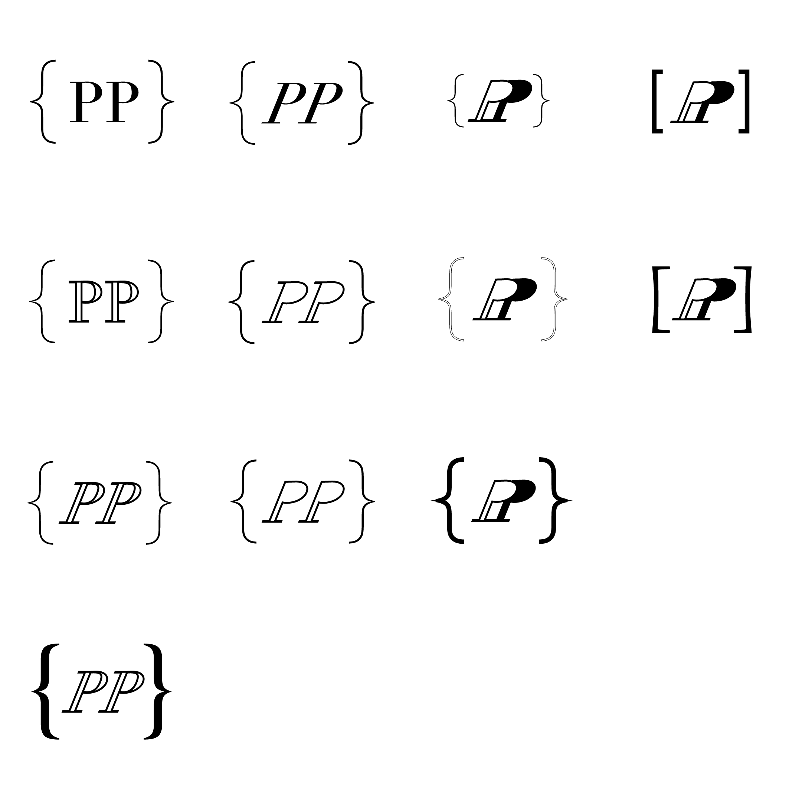

Branding is one of the highest topics in the marketing world, it sets the DNA of what makes your brand alive. It's like the scientists of the advertising world getting deep into the cultural and psicological buttons inside our colective consciousness.
In order to get a better understanding of the brand's motivations, I invested in one of the most aknowledges courses of Branding in Brazil, from Fundação Getúlio Vargas, coordinated by Berenice Ring. It didn't turn me into a specialist, but nowadays helps me to understand the mindset of some of my clients. Marketers and I can feel at the same page when we have to talk about a brand's needs.
Once I had decided to promote my services, I started to think in which values I identify myself, and why clients should hire me, not my competitors. First, I have responsibility and a high commitment level as my biggest values, my fingerprint in every job that I do. Second, today my biggest advantage in the field is my multidisciplinar skills, coding with the brand on my mind. So for those businesses who can’t afford the expensive package of digital branding, I’m a freelancer who could deliver something cheap and elegant.
After that, I started my naming brainstorm, looking for ludic words who could describe how committed I’m. I wanted to show to my prospects that I was going to take really good care of their business, making their companies get married with me. So first the word “Bro” came out, meaning a partnership like a real brother, an alliance. Later, I quit this name but not the main idea, so I changed it to “Father”, which is even more trustworthy and sounds more powerful as well. It's not the job of your brother to take care of you, right?
However, I realized that either "Bro" or "Father" could be too informal. Also, many people could consider "Father" too pretentious. At one point I decided quit both names and make a big change: just try to keep it as simple as possible. Ultimately, I’m just a freelancer web developer and the “brand” that could last all my lifetime is basically my own name.
Also I didn’t want to compete with agencies, which eventually might hire me. I’m a professional competing for a position with other people who wants the same job. So I started to considder that I should play a standard game, not trying to recreate the wheel.
I spent some time in a research to understand how developers create their own brands. And most of them love to use some specific code characters wrapping their name initials. Then I created some examples:
From my old school personality, first I came up with a font with a typewriter mood. I could had done my logo without many changes. But I forced an italic effect to give it some movement and a little modern look. Finally, I decided to have a bold curly braces, bringing some strength to the brand.
The reason why I choose curly braces is because greater than and less than are too common and it might communicate a not deep programming knowledge, since HTML (where those tags are more common) is not a programming language. And since I really love to learn javascript, I had no doubt that the curly braces would address my goals in this career.
Also, the curly braces are more alike to fit the golden ratio shape, which is something desired in design creations, as you can see at the right example.